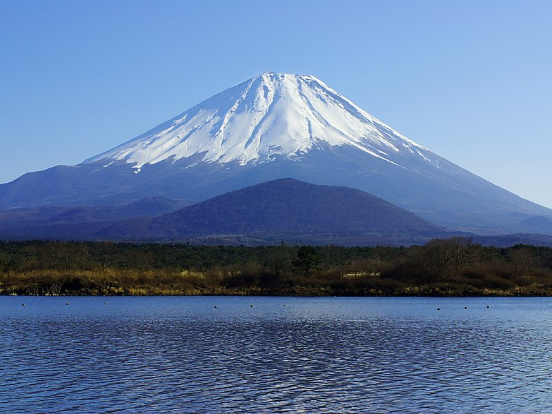
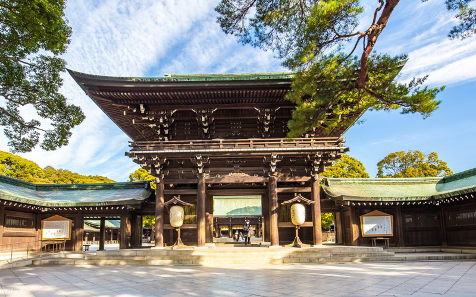

Japonya'da Gezilecek Yerler
Fuji Dağı
3776 metre yüksekliğinde olan Fuji Dağı, ülkenin en yüksek dağı sayılmaktadır. Japonya’da sembolik bir hale gelen Fuji Dağı hala aktif bir volkanik dağ olma özelliği taşımaktadır.İhtişamlı görüntüsü ise mutlaka görmeniz gereken manzaralardan olacaktır. 2013 yılından beri UNESCO Dünya Mirası Listesi’ne alınan dağ Japon halkının gözünde manevi bir yer edinmiştir.Sizler de doğa ve turistik açıdan önemli olan bu dağı mutlaka ziyaret etmelisiniz.
Kyomizu-Dera

Budist mabetleri içerisinde barındıran Kyoto Kiyomizu-Dera’yı da içerisinde barındırmaktadır. İçerisinde bulunan şelaleden adını almış olan mabet, ‘saf su’ anlamına gelmektedir. Gezi noktanızda bu bölge için bilmeniz gereken önemli ve değişik bilgi ise Kiyomizu-Dera’nın bu kadar üne kavuşmasının altında derin bir gelenek yatmaktadır. Bu gelenek 13 metreden atlayıp hayatta kalma esasına dayanmaktadır. Eğer atlayış ölümle sonuçlanmazsa herkesin isteklerine kavuşacağına inanılır. Bugünse Kiyomizu-Dera Japonya’nın ünlü bir turistik merkezi olarak misafirlerini ağırlamaktadır.
Meiji Tapınağı
Başkent Tokyo’da İmparator Meiji ve eşinin ruhlarına adanmış bir tapınak olan Meiji tapınağı bir tür Şinto tapınağıdır. Ziyaretçilerine tipik bir imparator tapınağının en güzel örneğini ve motiflerini sunan Meiji’nin yapımında bakır kullanılmıştır ancak 2nci Dünya Savaşı’nda yapılan saldırıyla zarar görmüş ve sonrasında restore edilerek aslına uygun şekilde dünyanın dört bir yanında gelen misafirlerine kapılarını açmaya devam etmektedir.